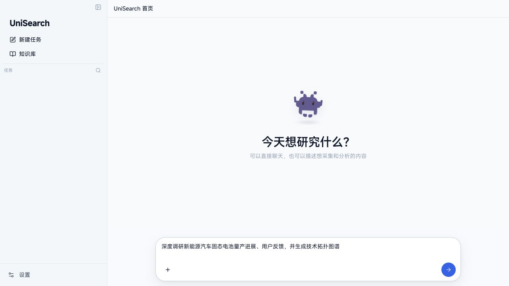
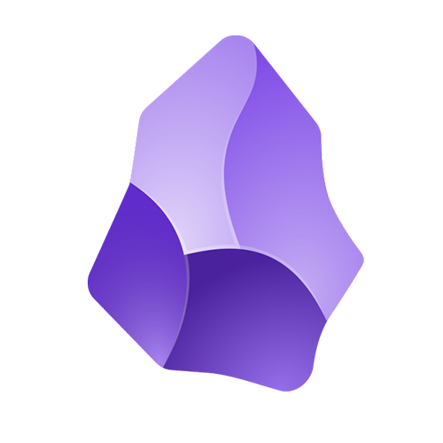
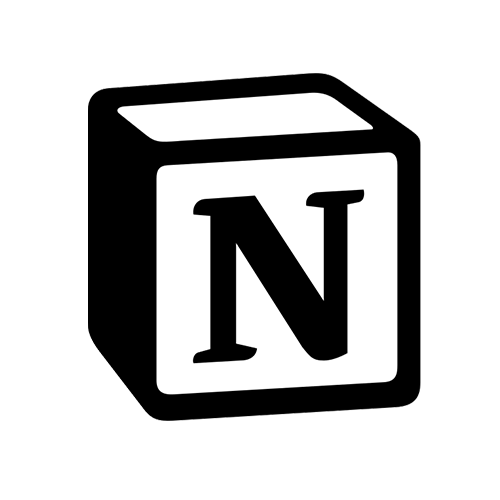
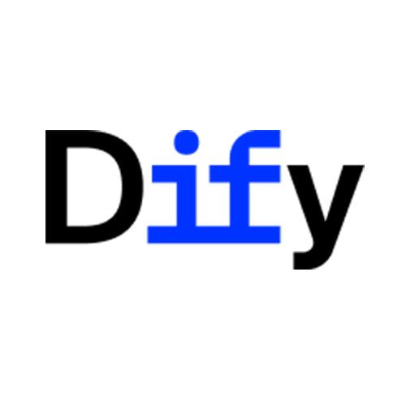
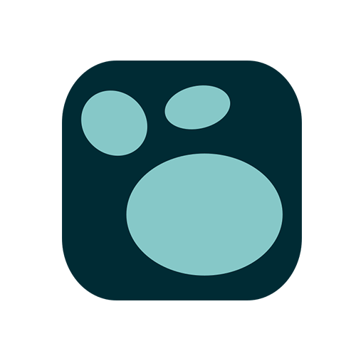
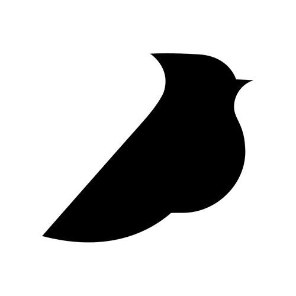

AI 驱动的内容调研与数据采集工作台
›
自然语言驱动
全网深度调研与数据洞察
AI规划调研路径 · 32+平台并发抓取 · 本地优先混合RAG · 实体图谱拓扑 · 100%数据本地留存

UniSearch 工作台实机界面
🐾 Codex Pet 就绪
🟢 服务正常运行
深度调研新能源汽车固态电池量产进展、用户反馈并生成技术拓扑图谱
|
意图解析与任务编排
增量模式
🎯 固态电池 商业化进展
🎯 宁德时代 · 卫蓝 · 埃安
🎯 质量门禁: 置信度 ≥ 0.85
多平台并发采集
⚡ 32.6 条/秒
小红书
48 笔记
哔哩哔哩
完成 (320 评)
arXiv 论文库
16 篇文献
实体图谱与洞察
12 个实体节点
📊 实体关系提炼：抽取固态电解质、能量密度、低温衰减等 12 项实体关系，并生成多版本对比洞察。
⚯ 宁德时代 ↔ 凝聚态电池
⚯ 续航达成率 ↔ 低温测试
CONNECTORS & SKILLS
32 平台独立连接器与 7 大内置技能
全平台独立适配，支持多引擎并发调度与自然语言工作流编排
小红书
图文笔记、视频、楼中楼评论与作者主页
抖音
短视频详情、创作者动态与热评穿透
快手
短视频内容检索与作品互动评论采集
哔哩哔哩
视频/专栏搜索、播放投币数据与全量评论
微博
实时热搜、关键词博文正文与转发互动
百度贴吧
主题帖内容、楼层回复与吧内舆情检索
知乎
问答深度内容、长篇专栏与高赞回答采集
DeepSeek
网页问答模拟、深度思考链（Reasoning）与引用
Kimi
长文本问答模拟与实时联网搜索引用提取
字节跳动 豆包
AI 对话交互、联网参考来源与正文提取
阿里 通义千问
问答模拟、结构化观点与参考依据采集
腾讯元宝
智能问答搜索与微信生态参考信源解析
纳米 AI
多信源问答对比与学术权威引用沉淀
百度 文心一言
问答交互、联网参考资料与思考逻辑抓取
百度搜索
全网网页检索、SERP 排名与落地页提取
必应搜索
国内外高质量网页摘要与落地页提取
360 搜索
中文网页检索、结果排名与摘要高速并发
搜狗搜索
全网网页与微信特色长尾内容发现
头条搜索
全网资讯聚合与突发热点事件检索
神马搜索
移动端全网视角搜索与即时摘要提取
中国搜索
国家级权威信源与政策资讯定向检索
36氪
商业特稿深度报道、投融资事件与快讯
arXiv 论文库
国际预印本论文检索、摘要、分类与 PDF 链接
GitHub 仓库
开源项目搜索、Stars 趋势与 Readme 元数据
AI HOT 资讯
全网 AI 突发热点、大模型动态与精选日报
智联招聘
岗位关键词检索、薪资城市过滤与详细 JD
前程无忧
职位列表检索、薪资范围与公司要求解析
猎聘网
中高端人才职位、年薪范围与企业画像
BOSS直聘
岗位详情、技能标签与团队规模解析
黑猫投诉
维权投诉事件、涉诉金额、处理进度与回复
通用网页阅读器
任意 HTTP/HTTPS 链接正文抽取与多媒体清洗
综合无水印解析
30+ 平台原画高清视频、图集与音轨无损解析
销售课程竞争情报
竞品定价、营销策略、客户顾虑挖掘与话术建议
新媒体内容调研
爆款选题发现、对标账号拆解与高赞表达洞察
品牌GEO与风险监测
7大 AI 问答平台品牌可见性与投诉舆情预警
招聘岗位薪酬调研
行业薪资基准线、城市梯队与任职资格要求测算
网页聚合全网搜索
主流引擎多词并行检索、深度翻页与正文阅读
创作者主页全量采集
指定创作者作品批量抓取、互动复盘与回帖跟踪
全网综合无水印解析
30+ 平台音视频与图集原画解析，提取高清素材
CORE CAPABILITIES
为专业调研打造的六大硬核系统
从意图解析、实体治理到本地混合 RAG，构建完整调研闭环
Agent & Incremental Planning
AI 自主任务规划与增量调度
自然语言输入调研诉求，Agent 自主规划采集路径与信源组合。支持增量迭代采集与多次研报并排比对，自动追踪舆情与事实演进。
1
自然语言诉求
→
2
多源增量抓取
→
3
版本对比研报
Local-First RAG
本地混合知识库与精准 RAG
SQLite FTS5 全文索引与本地向量检索深度融合，回答逐句标注原始信源出处与命中段落。
- 🔍 关键词 + 语义混合召回
- 📌 逐句事实证据精确溯源
- 🔒 知识索引 100% 存储于本地
Entity Graph
实体治理与拓扑图谱
自动抽取公司、产品、人物等核心实体，支持相似实体一键归并、多义拆分与力导向拓扑呈现。
- 🕸️ 力导向动态拓扑关系图
- 🔗 实体自动抽取与归并拆分
- 🎯 节点穿透关联原始文档证据
Sandbox & Quality Gate
子进程沙箱与质量门禁
Node.js 子进程沙箱隔离运行，界面始终丝滑流畅。内置置信度门禁与自动去重，确保入库数据真实有效。
多 Worker 进程隔离
置信度门禁评分
异常自动熔断恢复
Session & Codex Pet
内置会话沙箱与伴侣交互
内置隔离 Chromium 浏览器扫码登录，Cookie 本地持久化；Codex Pet 桌面伴侣实时联动任务进度。
扫码登录免重复认证
人机挑战可视化交互
Codex Pet 状态联动
Workbench & Exporters
多维数据透视与全格式资产沉淀
支持按信源、时间、作者、互动量灵活筛选聚合。采集成果一键导出为 Excel、Word、PDF、Markdown、JSON、CSV、Obsidian 及 IMA 等标准格式。

Obsidian
Notion
Dify
Logseq飞书文档

语雀IMA
Excel / PDF
SYSTEM ARCHITECTURE
本地优先与进程隔离的高可用架构
基于 Electron + TypeScript + Fastify + React 构建，前后端解耦与子进程沙箱隔离
01
交互与展现层
React 18 工作台、Codex Pet 伴侣、数据透视与力导向关系图谱。
02
本地服务与 Agent
Fastify REST / WS 流、意图解析规划、技能注册表与工作流引擎。
03
沙箱隔离执行层
Crawler Worker（HTTP / Playwright / CDP）与 Processor Worker 多进程调度。
04
本地知识与资产
SQLite FTS5 全文索引、本地向量检索、引用式 RAG 与多格式导出。
DOWNLOAD CENTER
获取 UniSearch 客户端
免费开源 · 纯净无广告 · 选择适配您操作系统的版本
macOS 客户端
适用于 macOS 11.0 及更高版本
🍎 Apple Silicon 版
适用于 M 系列全系芯片 (M1 及以上)
💻 Intel 芯片版
适用于 Intel 架构 Mac
💡 macOS 首次运行提示：
若提示“已损坏”或“未受信任”，请在终端执行修复权限：
sudo xattr -cr /Applications/UniSearch.app
Windows 客户端
适用于 Windows 10 / 11 (64位)
📦 安装包版 (.exe)
推荐使用，自动创建桌面快捷方式
🗂️ 免安装绿色版 (.zip)
解压即用，不写入系统注册表
💡 Windows 提示：
若 SmartScreen 拦截，点击「更多信息」→「仍要运行」即可正常启动。
👨💻 开发者源码调试
基于 Node.js 22+ 与 TypeScript，一行命令即可本地启动开发模式：
git clone https://github.com/ucmao/unisearch.git && cd unisearch/unisearch && npm install && npm run electron:dev
⭐ OPEN SOURCE ON GITHUB
用开源赋能每一位深度调研者与分析师
UniSearch 遵循 MIT 协议开源。欢迎在 GitHub 上为项目点亮 Star 或提交 Issue 与 PR，共同完善多源数据与洞察生态！
FREQUENTLY ASKED QUESTIONS
常见问题解答
关于本地隐私、多模型接入、增量对比与反爬风控的快速解答
UniSearch 客户端基于 MIT 协议完全免费开源。AI 规划与研报分析需在「设置」中填入您自己的大模型 API Key（支持 DeepSeek、MiniMax、OpenAI 或任意兼容 API，官方直连计费，UniSearch 不收任何中间费用）。
绝对不会。UniSearch 采用 Local-First（本地优先）设计，所有原始数据、SQLite 数据库、本地向量索引与登录会话仅保存在本机硬盘，不上传任何第三方服务器。
对同一主题进行持续跟踪时，增量模式会自动去重并仅采集最新发布内容；研报对比面板可并排高亮新出现的实体、观点变化与数据异同，直观呈现舆情演变。
UniSearch 具备智能防风控与人机挑战捕获机制。遇到图形验证码或滑块时，会自动弹出内置交互窗口供您手动完成验证，完成后自动持久化会话并无缝继续执行。
系统自动对抓取内容清洗归一，构建 SQLite FTS5 全文索引与本地语义向量库。在生成调研报告时执行混合多路召回与逐句溯源，确保每个论点均有清晰出处支撑。
原生支持 macOS（Apple Silicon M系列及 Intel 芯片，macOS 11.0+）和 Windows 10/11 64 位系统。